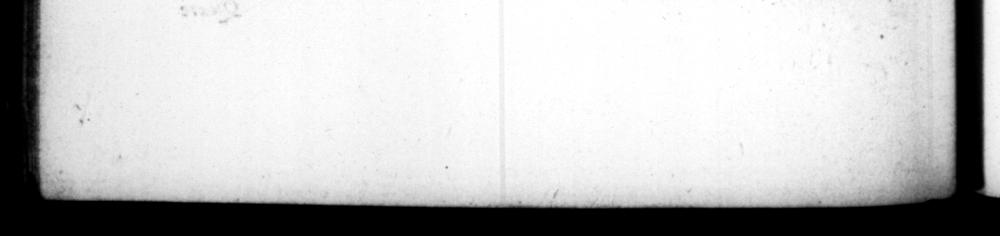

>. © U FT. I np Quere enjqn ego {cio Jam <-_ | cum or tihns familiaribus dempfi cuidam appoſitam notam, Ltura tamen inquit, enfet. idum virum, Græciæqʒ | que quis poll trono, rationem vita paſſus eſt reddere, notavitquè mul tos & —— — & ex — nevi generis, quod 1 fe inſcio ac ſine commeatu Italia exceſſiſſent quendam vero, & quod — 1 — in 4 fuiſſet, m temporibus, Nabisio Polt umo, Ptolemæum Alexandriam, crediti ſervandi. cauſa, ſecuto, majeſta tis 'crlmen apud judices motum. Plures notare conatur, magna inquiſitorum li. gentia, ſed 0 — dedecore, innoxios fere reperit, quibuſcumque celibatum, _ orbitatemy aut egeſtatem Jiceret, maritos, patres, opu— ſe probancibus, eZ .. 4 ſibimet vim ferro = arguebatur, iſleſum corpus veſte depoſita oſtentante. Fuerunt Ma in cenſura ejus notabilia, quod eſſedum arge eum ſumpruoſe fabricatum ac venale ad Sigillaria, redimi concidique coram imperavit : quodque uno die xx edicta propoſuir, inter que duo, quorum al tero admonebar ut uberi vinenrum . — bene dalia picanentur : altero, aii nue facere ad vipere morſum guam taxi arboris ſuccum, the vintage was very plentiful, to have their casks and female, 2 moni ſbed to ĩnd clinations 4 more cautfoully z 44 Aire Thy _ * nee wes what miſtreſk yon remain, He andy Loy ftruck out EW Lift of the judges, likewiſe depri2 o bis fr eodary of _ 4 75 at e r L greet Þ — rf L Was if — * "ef the Latin tongue. Mor did ſuffer any one to give an account of bis 272 by an pas. but Age teh man to ſpeak jor himſelf, haw meanly ſoever be was qualified for it. He dif graced many, and ſume that little . peed ity and fo a ES i. e. for 1 for going It _ is ænum Le and permiſſion; and one too, only for having attended in his Province upon @ king, as bis pr : obſe 2 that, in — Feng oftumus had 2 fer —_ — upon the — attending Ptolemy to Alexandria, to ſecure 4 debt. Several others tha: be attempted to diſgrace, — the great neglig of the perſons employed . — 705 — . " 5 eſtate, proving t el es to bands, ts, and rich, _—_ that was accuſed of an attempt made ue his own life by the — firipe himſelf to let him ſee there was not the lea mark of uch vielence upon bis The following things were remar h in his cenſorſhip e He arderds ſilver chaiſe that was very ſump ga. up, and 2 to jal — = ſigiUaria, to be purchaſed and hem preces before his eyes. And 1546 twenty proclamations in one day ; one of which be adviſed — e, — ſecured at the bung with pitch : And in another he told them, has nothing would ſooner cure the bite of a viper, than the {ap of che Ewe tree. 71, Expedis
